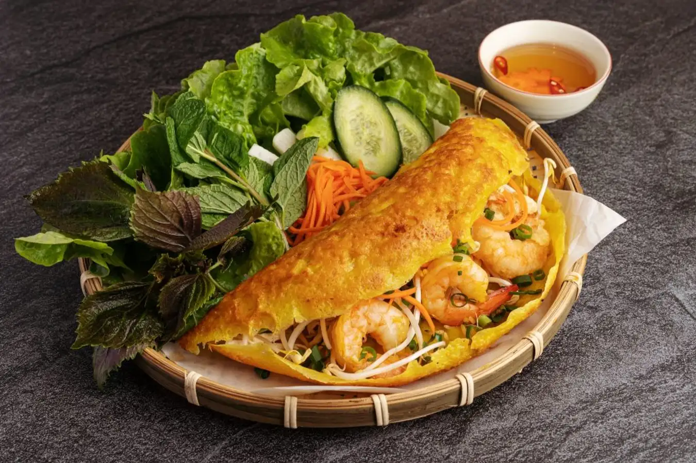
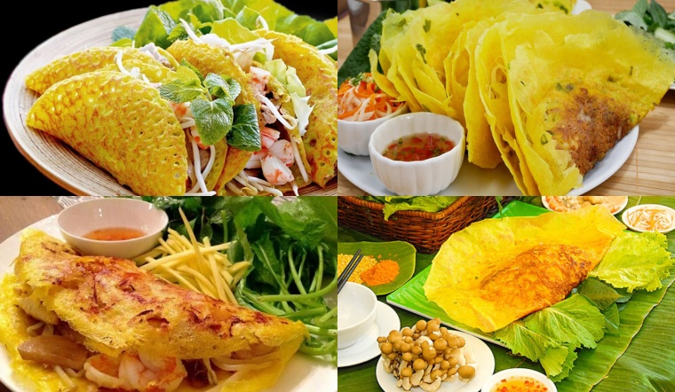

VIETNAMFOOD
VIETNAMFOOD
VIETNAMFOOD
VIETNAMFOOD
3/2/2024 15:27 GMT+7
Bánh xèo là một món ăn truyền thống thuần túy và rất quen thuộc đối với chúng ta. Tuy nhiên ngày nay, bánh xèo Việt Nam đã trở thành một cái tên đặc biệt. Luôn luôn được nhắc đến bởi nhiều người nước ngoài khi ghé thăm Việt Nam. Bánh xèo cũng được biến tấu nhiều phù hợp với khẩu vị, phong tục của từng địa phương khác nhau. Nhưng đều giữ chung cho món ăn này một hương vị riêng. Để lại cho người thưởng thức nhiều cảm xúc khó quên khi dùng qua dù chỉ là một lần.

Bánh Xèo Việt Nam – Niềm Tự Hào Ẩm Thực Và Những Thú Vị Không Thể Bỏ Qua
Cái tên “ Bánh xèo Việt Nam “ bắt nguồn từ đâu? Vì sao mà nó lại được gọi một cách đặc biệt như vậy? Nói ra chắc không ít người ngạc nhiên. Bởi chính là bắt nguồn từ âm thanh phát ra khi đổ bánh, lúc đổ bột vào chảo sẽ vang lên “ xèo xèo “. Từ đó, người dân quen gọi món ăn này là Bánh xèo. Nhiều người bảo “ Bánh xèo miền Trung xuất phát từ Bình Định”, còn “bánh xèo miền Tây là bắt nguồn từ người Khmer”…. Nhưng vẫn chưa có một công bố chính thức nào khẳng định nguồn gốc đầu tiên của bánh xèo là ở đâu. Bởi hầu như ở bất cứ địa phương nào trên khắp Việt Nam đều có bánh xèo. Tuy nhiên, ngày nay bánh xèo được chia làm hai loại rõ rệt, đó là bánh xèo nhỏ hay phổ biến ở miền Trung. Loại còn lại là bánh xèo to, được nhiều người dân miền Nam ưa chuộng.
Bánh xèo là món ăn thường được ăn và bán phổ biến hơn vào mùa mưa. Bởi lẽ vì sự giòn rụm, nóng hổi được vớt từ trong khuôn ra, ăn ngay tại chỗ, dễ khiến cho người ta cảm thấy ấm bụng. Khác với những món ngon đắt tiền, bánh xèo Việt Nam đơn giản nhưng đậm nét ẩm thực riêng. Từ khâu nguyên liệu, cách chế biến cũng như thưởng thức. Mọi thứ đều rất đơn giản và gần gũi. Hòa quyện lại với nhau cho người ta cảm giác bình yên, mộc mạc nhưng vô cùng đậm đà.
Bánh Xèo Việt Nam – Niềm Tự Hào Ẩm Thực Và Những Thú Vị Không Thể Bỏ Qua
Để có được một chiếc bánh ngon, bạn phải cần biết cách thêm gia vị cũng như pha bột là một bước vô cùng quan trọng. Đây là công đoạn mà ảnh hưởng trực tiếp đến chất lượng bánh bạn làm ra. Thoạt nhìn bánh xèo Việt Nam có vẻ bắt mắt khó làm. Tuy nhiên, chỉ cần một chút khéo tay và những nguyên liệu cực kỳ dễ tìm. Bạn đã có thể làm ngay cho mình những chiếc bánh xèo thơm ngon, đặc biệt. Ngày nay, không nhất thiết phải ra hàng quán, bạn cũng có thể làm ngay bánh xèo ngay tại căn bếp nhỏ của mình. Chế biến nhân bánh xèo vô cùng nhanh gọn, nay lại có bột bánh xèo pha sẵn Hương Xưa. Càng nhấn mạnh thêm sự đơn giản trong cách đổ bánh xèo hiện nay. Bánh xèo Việt Nam luôn là một trong những niềm tự hào của chúng ta với bạn bè quốc tế. Tuy mộc mạc nhưng rất đậm đà, hình ảnh bánh xèo cũng như con người ta vậy đơn giản, hòa đồng, mến khách. Nhưng cũng rất tinh tế và chuyên nghiệp không thua kém bất cứ quốc gia nào.
Bột bánh xèo Hương Xưa luôn tự hào là bạn đồng hành tin cậy, chất lượng, uy tín trong những bước quan trọng để làm nên bánh xèo. Cảm ơn các bạn đã đồng hành cùng Mikko. Ngoài bột đổ bánh xèo, Mikko còn cung cấp nhiều loại bột làm bánh khác mà chắc hẳn sẽ làm phong phú thêm cho thực đơn của bạn.

Khi khách hàng cần chúng tôi sẽ có mặt

Hỗ trợ thanh toán online qua Ví điện tử

Thông tin chính xác, kịp thời, đầy đủ
GIỚI THIỆU
QUẢNG CÁO
CHÍNH SÁCH BẢO MẬT
LIÊN HỆ
©2024